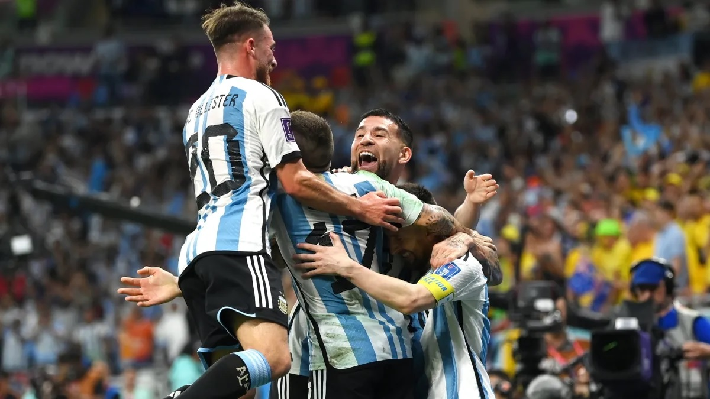

Argentina vs. España, por la Finalissima: ¿cuándo se juega el partido?
La Federación Internacional de Fútbol (FIFA) organiza el Mundial 2026, el primero con 48 seleccionados, y tiene pendiente la programación de la Finalissima entre la selección argentina y la de España, campeones de la Copa América y Eurocopa 2024, respectivamente.Aunque de momento no hay información oficial al respecto, es una casi una certeza que el duelo no se desarrollará este año sino el siguiente y antes de la cita ecuménica. Competir en esa fecha puede ser una gran prueba para ambos para saber en qué lugar están en la antesala del gran objetivo del próximo año.
El conjunto dirigido por Lionel Scaloni tiene programados otros cuatro partidos en 2025, todos por las eliminatorias sudamericanas a la Copa del Mundo, y los afrontará de a pares en junio y septiembre. Así, le resta calendario para cuatro encuentros más en las dos últimas ventanas de la FIFA los cuales, muy probablemente, serán amistosos contra rivales a confirmar.
Con el calendario de los próximos meses ocupados tanto para la Argentina como España, la certeza es que la Finalissima será en los meses previos al Mundial 2026 siempre que ambos equipos tengan buena predisposición.
